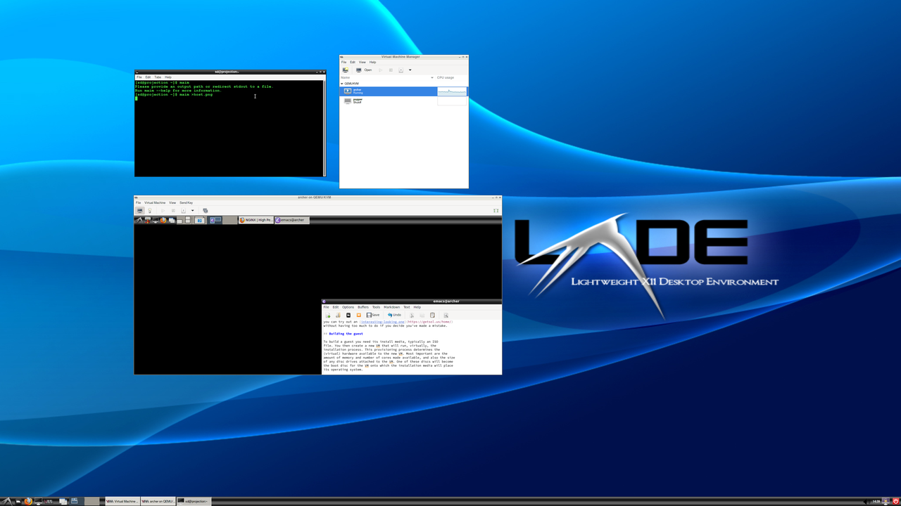

Virtual machines are now commonplace in industry and academia. They offer huge flexibility in managing large and/or complicated installations. But what about for individual use, as a power user and developer? Would that work? Would it be worth it? In the interests of science, I decided to find out.
Motivation
I’m a long-time Linux and Mac user. But Macs are rapidly ceasing to be computers in the normal sense as OS X converges with IOS, and that’s not a direction I’m comfortable with. And of course Mac laptops are eye-wateringly expensive. Even though I don’t typically buy my own machines, I think it’s time to embrace my inner Linux recidivist.
I started thinking: what’s the best set-up for a new computing environment? I realised that, if I was starting from scratch with a server, I’d do a minimal bare-metal installation and have everything else containerised using Docker or Podman. That way all the services are isolated and can be ungraded independently, with the bare metal part being just enough to run the containers.
But then I thought that the same arguments apply to the desktop environment too. Could I put just enough on the bare metal to run a hypervisor, and then run the “real” user computing environment in a virtual machine (VM)? What would be the trade-offs?
The covid-19 pandemic then led to my working from home. Sitting under the desk in my study was my home server, used mainly for backups and media. The temptation to experiment proved irresistible.
Setting up the host
The server was a 2012-vintage Shuttle XPC with two twin-core Intel i5 processors and 8Gb of memory, a 256Gb SSD and a 4Tb spinning-rust data disc. Perhaps not enough for all I had in mind, so I upgraded to 16Gb and a 512Gb SSD from Mr Memory, who make the whole process ridiculously easy and quick. Having the data all on its own disc made life a lot easier too, of course, since I could simply swap out the boot SSD without losing the megabytes of data files.
Host OS
The server had been running Scientific Linux, which is approaching end of life and is anyway designed as an end-user distro and not a minimal host. So the first software choice was for the Linux distro to use on the bare metal. That was actually easy: if you want to go minimal, Arch Linux is the logical choice, since it comes stripped-down by default.
Burning an Arch installer to a USB stick is very
easy. Installation
is from the command line — no graphical installer here! — but
straightforward if you’re comfortable with working in a shell. The
flexibility is sometimes daunting, and it’s easy to forget something
fairly essential, but I had soon had everything running. “Everything,”
of course, was not very much: networking, an X Server, Firefox, and
Docker, plus enough utilities to debug and configure as required. I
mounted the data disc onto /mnt/data and had a working system ready
to be populated.
Services
The two services I wanted were OwnCloud for backups and Plex for media. I had all the data sitting on my data disc already, to the trick was to get a containerised service to access what I already had.
Both services already have containerised versions of themselves available, complete with Docker Compose files to orchestrate them. The only issue was therefore to change from using Docker volumes to use the volumes I already had built from earlier. The same procedure applies for Plex, giving it access to all my media.
Gateway to the internet
Some people worry that pre-built containers have security holes — or at least make security decisions that they disagree with. This was the case for me with OwnCloud, which by default runs over HTTP. Rather than start changing the container setup I instead used nginx to map an HTTPS connection to the outside world to a local HTTP port which I thn mapped to the port exported by the OwnCloud container.
A virtual machine for everyday
The stage is now set to create a virtual machine on which to run user processes. Just to recap, we now have a bare-metal Arch installation running some containerised services, and are looking to build a VM for me to use as a “normal” everyday machine.
Virtualisation
Docker provides containers, not virtual machines: the difference is subtle but vital, and in fact makes a great interview question to see whether someone knows what they’re talking about with regard to virtualisation technology.
Containerisation creates an isolated userspace within which processes
run. All the processes are visible to, and controlled by, the host —
a fact that can be confusing when you run ps and see, for example,
an Apache web server running when you deliberately didn’t install
Apache, but it’s been installed and is running within one of your
containers. There is however only one kernel running, with all the
containers and their processes running on top of it. The container
manages the name spaces for file descriptors, processes, and other
elements that are made available through the shared kernel.
A virtual machine, by contrast, has its own “guest” kernel as well as its own userspace, being managed by a hypervisor on the host. A VM can be running the same operating system as the host, or a variant, or a completely different one, since it has its own kernel. It can even have a different processor architecture to the host, allowing an Intel machine, for example, to emulate a MIPS to run a MIPS operating system and applications. That this is slow from within the guest (since the hardware it assumes it’s running on is actually a software emulation) doesn’t detract from the flexibility virtualisation gives. And if you don’t opt for this flexibility and simply expose the host’s architecture to the guest, there’s often remarkably little performance degradation versus running on bare metal.
Linux has kernel-level virtualisation through a system called kvm, accessed through a general system emulator called QEMU. What this means is that QEMU manages the virtual machines, either emulating them in software (for architectures different to that of the host) or running them natively alongside the host’s OS (for the same architecture) using kvm, at pretty much full native speed in most cases.
If you’re running a headless server you can manage VMs directly from the command line. Since my host has a display, I opted to go slightly less old-school and install a GUI VM manager, virt-manager, that can create, provision, start, and stop VMs. You could also use VirtualBox, which trades slightly less flexibility for a slightly more accessible user interface.
Choosing the guest OS
Since we’re virtualising, the OS in the guest can be anything: it doesn’t have to be Arch like on the host. This is hugely flexible. Debian, Ubuntu, Mint, and the other end-user-facing Linux distros are all options (as is Windows, and even OS X if you’re prepared to ignore the licensing terms that prohibit running on non-Apple hardware).
Since my server is quite old and not exactly bursting with memory, I realised that the modern distros might struggle a little, so I opted to use Arch again. That way I could add whatever level of complexity and eye candy I wanted, without committing up-front to (for example) a huge window manager.
But here’s the thing: the choice matters a lot less than you think, because you can easily change it. It’s a pain to change the distro on the bare metal, but trivial to change that of a virtualised guest. It’s perfectly possible to create multiple guests and run them as test environments before spending too much time setting them up, or to change your mind and set up a different one when you feel like a change — something that happens to me about once every year when I see someone else’s setup and get distro envy. Or when there’s a new version of this year’s best distros you can try out an interesting-looking one without having too much to do if you decide you’ve made a mistake.
Virtual storage
In the same way that a VM is virtual, so too can disc storage be. A virtual machine gets a virtual disc image, typically a “container” (that word again) format which is actually a single file on the host’s (physical) disc that contains the image of a complete file system mounted into the guest.
This might sound strange, but it has a lot of advantages. Firstly, you can decide how large the disc should be, and so how much disc storage the guest gets. This then means there’s no way it overrun and take over the host’s entire storage capacity, which makes things more stable. Secondly it makes it easy to backup a guest’s whole file system, since it’s “really” just a single file as far as the host is concerned. Finally, the guest can of course have multiple virtual discs mounted into its file hierarchy, just like a bare-metal machine can have multiple physical discs — and you can create new ones as needed, up to the size of physical discs available on the host.
There are several disc image formats available. If you need to interoperate with other systems then this choice might be important, but in the main it’s safe to go with the default, QCOW2. This is efficient and flexible — in somewhat unexpected ways, as we’ll see later. Virtual Box uses a different format, VDI, but (as with a lot of things in this virtual universe) you can convert between image file formats fairly easily if it’s ever required.
Building the guest
To build a guest you need its install media, typically an ISO file. You then create a new VM that will run, virtually, the installation process. This provisioning process determines the (virtual) hardware available to the new VM. Most important are the amount of memory and number of cores made available, and also the size of any disc drives attached to the VM. One of these discs will become the boot disc for the VM onto which the installation media will place its operating system.
As you might be suspecting from the previous section, the choices made here are less important than they might first appear because they can always be changed later: there’s no “real” hardware being created, of course, and so it can all be changed easily.
In particular, QEMU provides a simple virtual (of course) network for the guest, which it then connects to its own internet connection using NAT. In other words, QEMU behaves in the same way as most home routers do, letting other machines (the guest) “hide” behind the single IP address of the host. This isn’t the best choice, but we’ll just optimise it later: isn’t virtualisation wonderful?
virt-manager provides a user interface to VM creation and
provisioning. Once done, we arrive happily in the situation where the
desktop of the host shows virt-manager‘s management console and a
window containing the guest, in which we can see an editor window open
on this post.

User data
What about a home directory? You could of course allocate a large enough boot disc and store your data there — perhaps restored into the guest from the OwnCloud service running on the host?
I think a cleaner way is to create another virtual volume on the host and mount it into the guest. This has a number of advantages:
- You can decide how much space you want to give to your home directory.
- It’s just a single file (from the host’s perspective), so easy to copy and backup if needed.
- You can do all sorts of funky things with RAID on the host, independently of the guest.
- You can encrypt it independently of the boot disc.
- You can share the same home directory — at different times! — with different guest OS set-ups.
If you were going to use anything other than Linux you’d want to create the home directory using a file system that can be read by all the OSs you intend to use. For Linux world, I chose ext4 with encryption, populated from the OwnCloud synchronisation copy.
Tuning
Just as you have to decide how big a hard disc to buy and how much memory to put into your host, you have decisions to make about the memory, processors, and disc storage available to the guest.
To state the obvious: the guest can’t have more memory than the host has, or more cores, or more disc space. In fact it can’t even have as much as the host, as the host needs to keep some for itself, to run the hypervisor (and containerised services, in my case). But within these constraints we have essentially free rein.
Exactly how you decide to make these decisions is a matter for you. For myself, I decided I wanted to make a lot of power available to my guest (since it’d be my everyday machine) while retaining enough for the host to operate properly. Implicit in this is that I would only be running one guest at a time, which makes sense for a user machine but might not in some developer scenarios when you might want a development VM and a service VM running simultaneously and communicating.
Guest resources
I’ve already mentioned the decision on storage: I built a 20Gb boot disc image located on my host’s 512Gb SSD (for speed), and a 400Gb home directory disc image located on the host’s 4Tb data disc along with my media and other data. (Access times to the home directory aren’t as time-critical as those for the operating system and programs.)
For cores, I gave the guest 2 of the 4 cores available. I also gave it 12Gb of the 16Gb of memory available. The 4Gb remaining for the host was enough to run the hypervisor and containers comfortably. 12Gb isn’t a huge amount of memory for a modern desktop, especially if you do software development, but it’s decent enough as a proof of concept, and you can save memory by choices like a lightweight window manager (LXDE in my case) if desired.
Network
I mentioned earlier that the QEMU default networking setup uses NAT. This is simple, portable, and not especially fast: the host has to do some work managing the translated addresses. You can speed things up by creating a bridge network to which you attach the host’s physical ethernet device, and then connect this bridge to the guest’s (virtual) ethernet adaptor. This can require changes in DHCP set-up at the router so that the guest gets leased an IP address.
Evaluation: is it all worth it?
If you’re still with me, you must be wondering if this was worth it. I can answer that in several ways. The short answer would be that I’m writing this article on my “everyday VM”, which I’ve been using now for a month or so, so it can’t be too bad. The longer answer is that there have been several pros and cons, which I’ll present below so you can make your own mind up.
Pro: Stability
The VM system is very stable: there seems to be no stability cost from virtualising, and little or no performance cost. I’ve had no crashes of the host at all, in fact.
The use of containers for services is a benefit too: less configuration (usually no) and less chance of conflicts with other services. The orchestrated containers are essentially pre-configured services to which you make storage available.
The guest has had problems once or twice, but here virtualisation is an advantage: I can shut down the VM and still have a working computer. In one instance this helped me debug what was happening, because the host’s logs pointed me in the direction of a problem in the guest, which wasn’t immediately evident from the guest’s logs: that made things enormously easier to fix.
Pro: Fixing mistakes, re-sizing the boot disc
Since resources are virtual, there’s a tendency to under-allocate them. In my particular case I thought a 20b boot disc would be perfectly bit enough, only to run out of space as I used the machine more.
If I’d made this mistake for a real machine, I’d’ve had to re-partition the disc. With a virtual disc image, however, it’s fairly straightforward to re-size make the image larger and then re-size the filing system it contains — and a 20Gb boot disc is suddenly a 48Gb boot disc. That’s an enormous saving of time and effort from going virtual. The same would be the case for the home directory disc, of course.
Pro/Con: Use of resources
Having retained 4Gb and 2 cores for the host, I immediately started to worry whether this was too little. No, it turns out: the containers and hypervisor all run happily. So, then, is it too much? Perhaps a little: the host might get by with 3Gb and one core. The wider issue is that, if the user machine was real, it’d have all the resources of the physical machine to manage; as a guest, that decision is made a priori and may result in some memory (for example) not being used to its best advantage.
I suspect that if I had 32Mb of physical memory and 16 cores I’d be worrying a lot less. But there’s certainly the potential to under- or over-allocate resources when splitting between host and guest. This would be exacerbated in the case of multiple guests.
Con: Removable media
If you plug a USB drive into the physical machine, it appears on the
host, not the guest. This confused me the first time it happened,
because I’d kind of forgotten I was using a virtual guest. You can fix
it easily enough by telling virt-manager to map the drive (or indeed
other USB device) through to the guest: I do that for my camera. But
it’s hardly plug-and-play.
Con: Video conferencing
The audio on video conferencing systems like Microsoft Teams stutters badly. (The video seems fine, as is audio when just playing video: it’s the interactive audio that’s a problem, with lots of noise and echoes.) This may simply be a mis-configuration, or it might be a place where virtualisation incurs a cost over bare metal — or could be that my 2012-vintage physical cores can’t handle the modern codecs properly. This is clearly an issue when working from home in the pandemic, and means I have my Mac kept live purely for meetings, at least for the time being.
Conclusion
Actually I think I missed out the biggest pro:
If I decide that I can indeed move fully to Linux for all my computing, I’ll buy a bigger machine (laptop or desktop, or possibly both). In that case my VM will move trivially to the new machine: there’ll be no re-installing, just copy a couple of (rather large) files over onto the (hopefully larger) host and boot up. That’s a major simplification compared to most machine upgrades, and it comes purely from virtualising the machine on which you do most of the work and customisation, sitting it on top of a stable and persistent host and hypervisor. That’s enough to make me think I’ll stick with the virtual life.